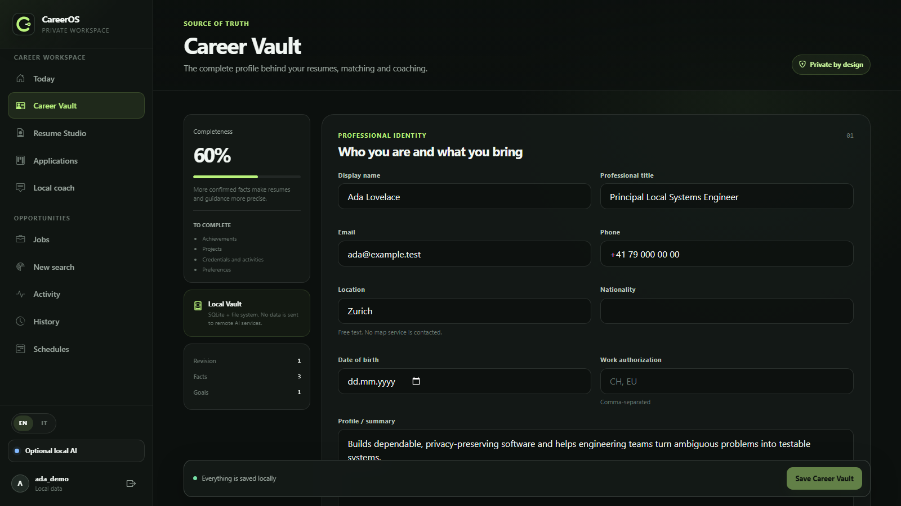
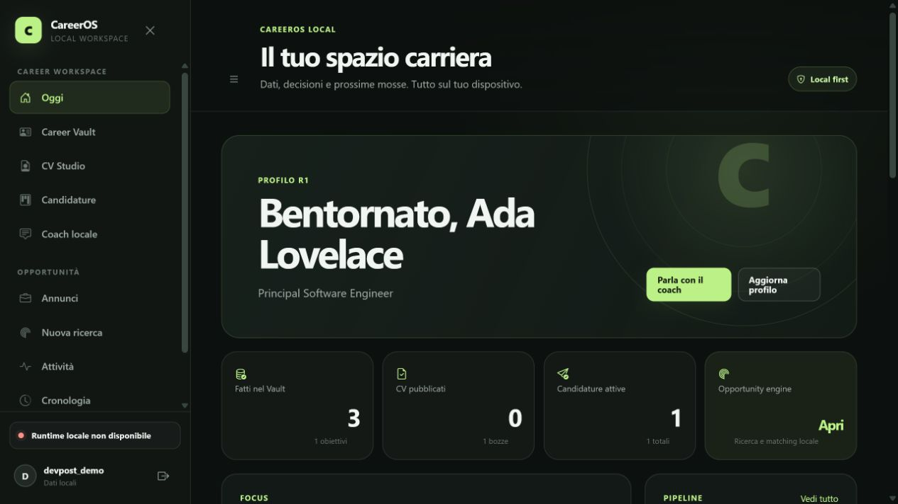
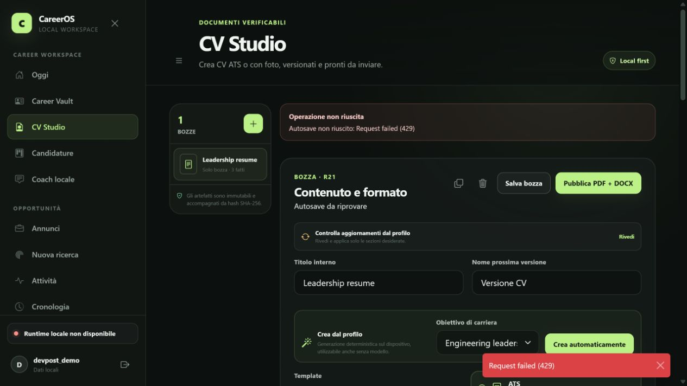
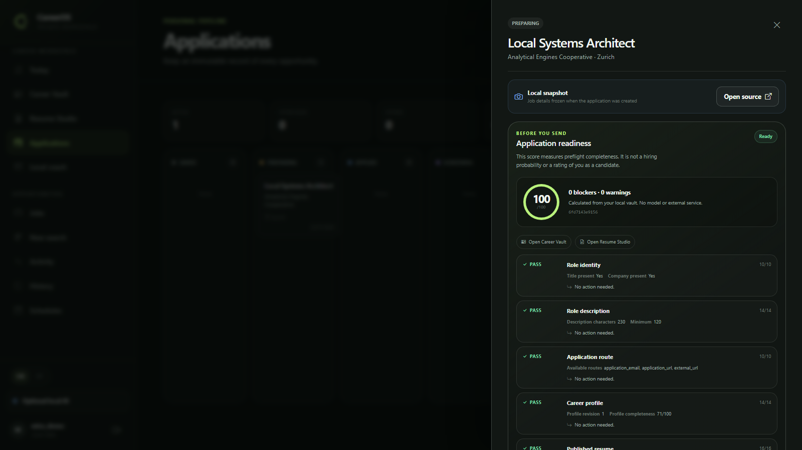

Career Vault
Know where every career claim came from.
Organize work, education, skills, and achievements with provenance, verification status, and revision history.

Local-first career utility
Keep one verified record of your experience. Use it to build resumes, compare job opportunities, and track applications without sending that record to a cloud model.

One record, used throughout
Save your experience with its evidence, then use the same record across resumes, job review, and application tracking.
Career Vault
Organize work, education, skills, and achievements with provenance, verification status, and revision history.

Resume Studio
Select saved facts, edit on a visual canvas, and publish immutable PDF or DOCX versions. Nothing is added to your history behind your back.

Application Pipeline
Build provider queries directly from the roles, locations, domains, and limits you enter. Then keep local job snapshots, stages, tasks, and an append-only timeline in one focused pipeline.

Daily action agenda
One local queue orders overdue, due-today, upcoming and unscheduled actions across every active application. It refreshes when time changes, stays isolated to the signed-in user and never reads private event or dossier bodies.
Application Readiness
CareerOS runs a deterministic preflight over the saved role, application route, profile, linked resume, rendered files and supporting evidence. Every check shows what it found and what to fix. No model is involved.
The real app, with fictional data
This silent tour uses the working desktop product, not a mock-up of this page. It follows a disposable fictional profile through the dashboard, Career Vault, Resume Studio, and application pipeline.
Your data stays with you
The API, database, generated documents, and required analysis runtime run on your machine. CareerOS Local adds no telemetry, cloud-model fallback, or remote prompt log.
Only evidence selected for a task reaches the local model.
Public job searches are separate, visible, user-initiated requests.
Export, restore, or explicitly erase the app-owned vault.
Your device
No product data leaves this boundary
Built for inspection
Trust boundaries are explicit. Storage is transactional. AI responses follow strict contracts, and Python, React, and Rust checks cover the working system.
Native desktop shell, minimal capabilities, and supervised sidecar lifecycle.
Keyboard-accessible workspace and an editable visual resume canvas.
Loopback-only application API with validated domain and AI contracts.
Transactional local state, versioned migrations, and atomic portability.
Run it for yourself
Download the release, inspect the source, and try the real workflow with data you control.